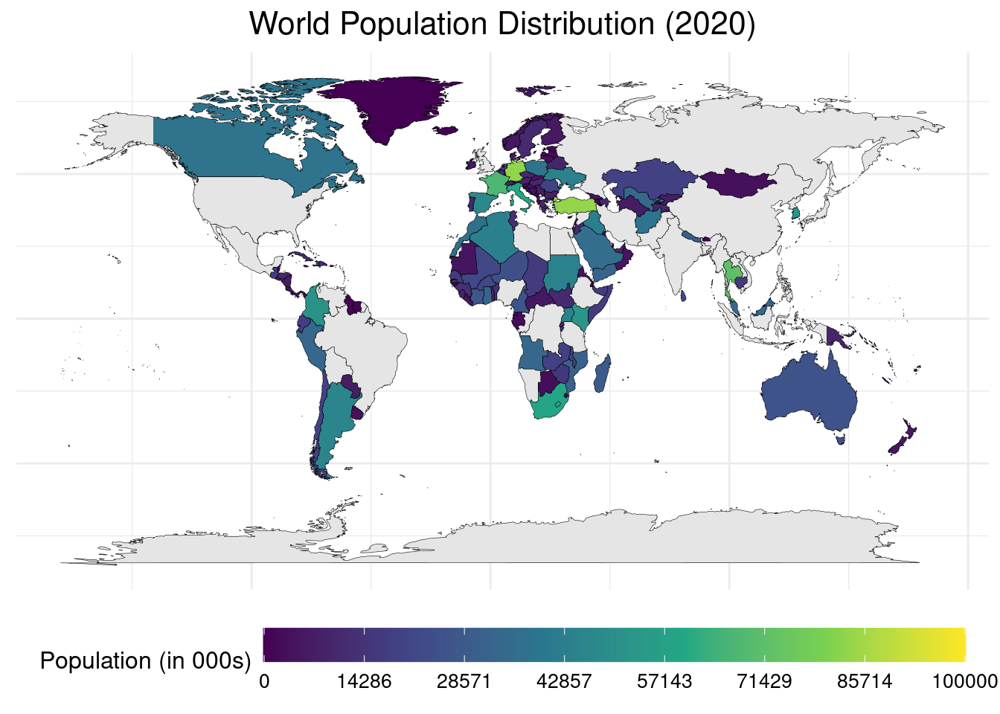
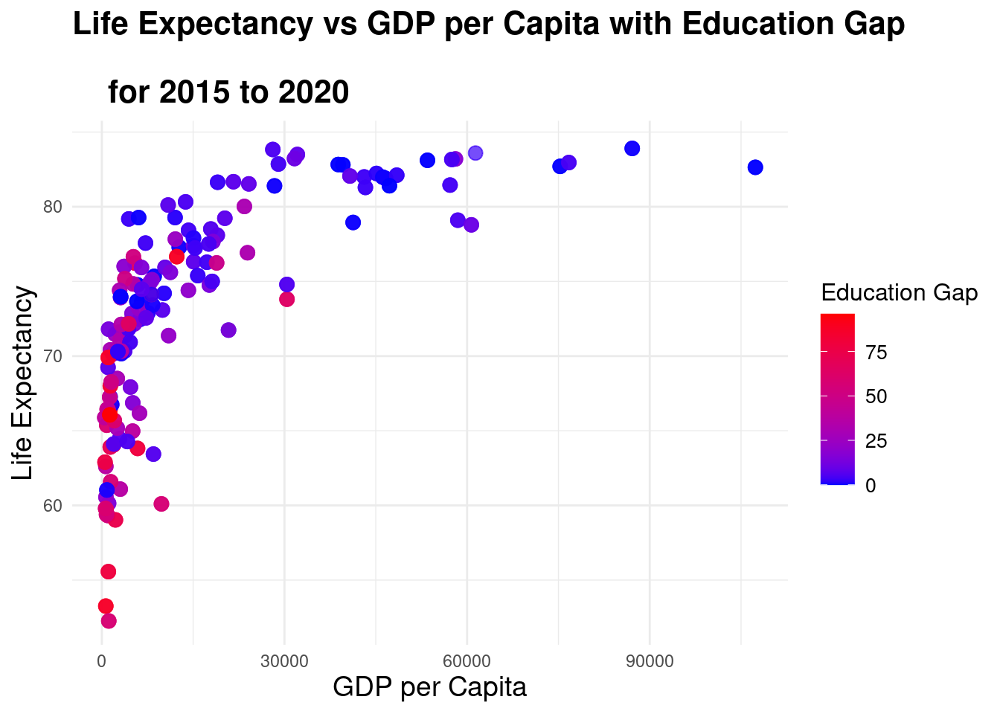
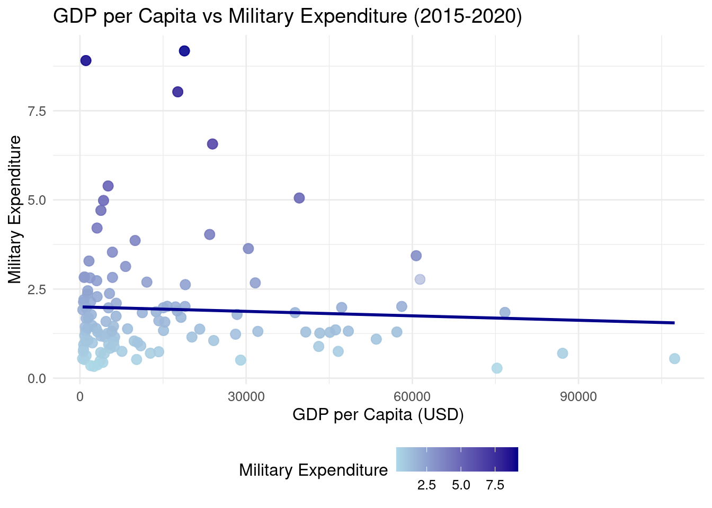
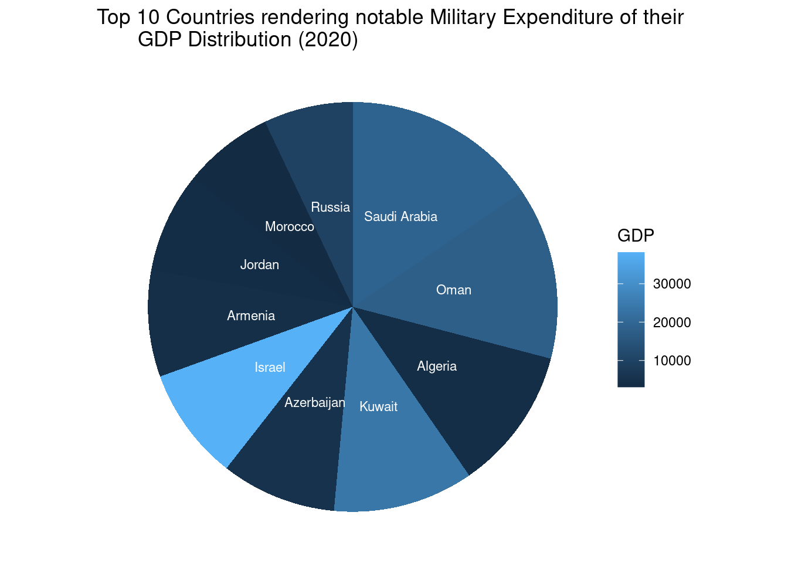
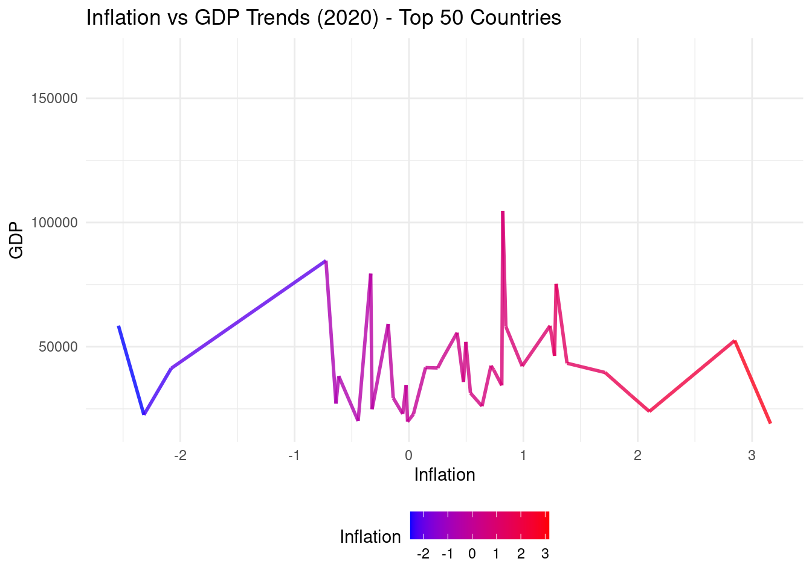
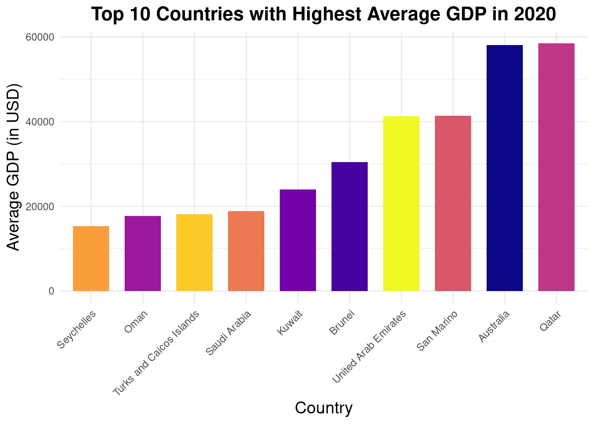

Insights Unveiled for Global Dynamics in GDP, Population, Life, Defense and Education in 2020
Global overview of the population
In 2020, the world’s population stood at approximately 7.8 billion people, distributed across diverse landscapes, cultures, and nations. Visualizing this population on a map provides a striking insight into the density and distribution of human life across the globe.
Top 5 Countries by Population in 2020:
- China: With a population surpassing 1.4 billion, China remains the most populous country in the world. Its vast territory encompasses a rich tapestry of cultures, languages, and traditions, with bustling cities juxtaposed against serene rural landscapes. The demographic density is notably concentrated in the eastern coastal regions, particularly around major metropolitan areas like Beijing, Shanghai, and Guangzhou.
- India: India, with its population exceeding 1.3 billion, closely follows China in population size. Its dynamic and diverse populace inhabits a vast subcontinent marked by varied terrain, from the Himalayas in the north to the tropical shores in the south. Major population centers include Mumbai, Delhi, and Kolkata, where urban sprawl and bustling streets encapsulate the vibrancy of Indian life.
- United States: Home to over 330 million people, the United States boasts a diverse population spread across a vast expanse of territory. From the densely populated urban cores of cities like New York, Los Angeles, and Chicago to the sprawling suburbs and rural heartlands, the American landscape reflects a blend of cultures, lifestyles, and landscapes.
- Indonesia: Indonesia’s archipelagic nation is home to more than 270 million people, making it the fourth most populous country globally. Its islands span thousands of miles across the equator, offering a mosaic of cultures, languages, and ecosystems. Population centers such as Jakarta, Surabaya, and Bandung thrive amidst lush landscapes, while remote islands maintain their own distinct ways of life.
- Pakistan: With a population exceeding 220 million, Pakistan rounds out the top five populous countries in 2020. Nestled between South Asia and the Middle East, Pakistan’s diverse population inhabits varied landscapes, from the fertile plains of Punjab to the rugged mountains of the northwest. Cities like Karachi, Lahore, and Islamabad serve as bustling hubs of commerce, culture, and politics.
On a world map, the concentration of population in these countries would be evident, with clusters of urban areas connected by networks of roads, railways, and waterways. The distribution of population reflects not only geographical factors but also historical, cultural, and economic dynamics that shape human settlement patterns across the globe.
Growth and Gaps
Analyzing the relationship between life expectancy, GDP, and education gap across the globe from 2015 to 2020 offers insights into socioeconomic development and its impact on human well-being. By visualizing this data through scatterplots, we can discern patterns and trends that shed light on the interplay between economic prosperity, educational attainment, and health outcomes.
The scatterplot illustrates each country’s position based on its GDP per capita, life expectancy, and education gap. A larger GDP per capita usually correlates with higher life expectancy due to better healthcare systems, infrastructure, and living standards. Meanwhile, education acts as a catalyst for socioeconomic progress, influencing both economic productivity and health outcomes.

Examining the top four countries from this dataset provides a nuanced understanding of these dynamics:
- Norway:
- High GDP per capita.
- Relatively low education gap.
- High life expectancy.
- Robust welfare system and emphasis on education contribute to overall well-being.
- Switzerland:
- Strong economy with high GDP per capita.
- Low education gap.
- High life expectancy.
- Advanced healthcare and education systems bolster quality of life.
- Australia:
- Solid GDP per capita.
- Moderate education gap.
- High life expectancy.
- Comprehensive healthcare and education policies promote longevity and prosperity.
- Germany:
- Prominent economy with substantial GDP per capita.
- Low education gap.
- High life expectancy.
- Efficient healthcare infrastructure and focus on education yield favorable outcomes.
GDP v/s Military Expenditure
Analyzing the relationship between a country’s GDP and its military expenditure from 2015 to 2020 provides valuable insights into global defense spending trends and the allocation of economic resources towards national security. By visualizing this data through a scatterplot with a regression line, we can discern patterns and trends that shed light on the priorities and strategies of nations regarding defense and economic development.
The scatterplot illustrates each country’s position based on its GDP and military expenditure. Generally, countries with larger economies tend to have higher military expenditures, as they possess greater financial capacity to invest in defense capabilities.

Examining the top three countries in terms of military expenditure relative to GDP offers valuable insights:
- United States:
- The largest economy globally.
- Consistently the highest military expenditure.
- The regression line for the U.S. likely shows a steep positive slope, indicating a significant proportion of GDP dedicated to defense.
- The U.S. maintains a robust military presence globally, investing heavily in defense technologies, personnel, and operations.
- China:
- The second-largest economy in the world. Experiencing rapid growth in military spending.
- The regression line for China may show a steady increase over the years, reflecting its efforts to modernize and expand its military capabilities.
- China’s military expenditure reflects its ambition to assert itself as a regional and global power, with investments in advanced weaponry, naval expansion, and technological innovation.
- Saudi Arabia:
- A major oil-producing economy with substantial GDP.
- Among the highest military spenders relative to GDP.
- The regression line for Saudi Arabia may demonstrate fluctuations influenced by oil prices and regional security concerns.
- Saudi Arabia’s military expenditure is primarily aimed at safeguarding its borders, countering regional threats, and maintaining stability in the Middle East
These top-ranking countries illustrate varying approaches to defense spending, influenced by geopolitical factors, strategic objectives, and economic capacities. While some nations prioritize military modernization and power projection, others focus on regional security challenges or rely on alliances for defense. Understanding the relationship between GDP and military expenditure provides valuable insights into the geopolitics of defense and national security strategies on the global stage.
In 2020, global military expenditure continued to be a significant aspect of many countries’ budgets, with several nations allocating substantial resources to defense. Understanding the distribution of military expenditure as a percentage of GDP provides insights into each country’s priorities and geopolitical concerns.
Here, we examine the top 10 countries with notable military spending relative to their GDP, presented in a pie chart format.

- Russia: Maintains a formidable military budget, reflecting its status as a major global power and its commitment to national defense.
- Saudi Arabia: Allocates a substantial portion of its GDP to defense, driven by regional security challenges and strategic interests in the Middle East.
- Oman: Prioritizes defense spending to safeguard its sovereignty and security interests in the Gulf region.
- Algeria: Invests significantly in defense to address internal security concerns and maintain regional stability.
- Kuwait: Devotes a notable share of its GDP to military expenditure, emphasizing defense preparedness and regional security.
- Azerbaijan: Prioritizes defense spending to address ongoing regional conflicts and security challenges.
- Israel: Allocates a significant portion of its GDP to defense, reflecting its unique security situation in the Middle East.
- Armenia: Maintains a considerable military budget relative to its GDP, influenced by regional tensions and unresolved conflicts.
- Jordan: Dedicates resources to defense to ensure national security and stability in a volatile region.
- Morocco: Invests in defense to safeguard its territorial integrity and address regional security threats in North Africa.
These countries’ allocations to military expenditure as a percentage of GDP vary, reflecting diverse geopolitical contexts, security challenges, and strategic priorities. The pie chart visualizes these proportions, offering a comparative perspective on global defense spending trends.
GDP v/s Inflation
In 2020, global economies faced unprecedented challenges due to the COVID-19 pandemic, leading to fluctuations in inflation rates and GDP growth. Understanding the trends in inflation versus GDP across the top 50 countries provides valuable insights into the economic landscape during this tumultuous period.

Key points to explain the trend chart:
- Overall Economic Impact:
- The pandemic-induced recession led to varying degrees of economic contraction across countries, influencing both inflation and GDP trends.
- While some nations experienced sharp declines in GDP accompanied by deflationary pressures, others grappled with inflationary spikes amidst supply chain disruptions and fiscal stimulus measures.
- Inflationary Pressures in Developing Economies:
- Many developing economies witnessed elevated inflation rates as supply constraints, currency depreciation, and heightened demand for essential goods fueled price increases.
- Countries such as Argentina, Turkey, and Venezuela faced severe inflationary crises, posing significant challenges to economic stability and social welfare.
- Deflationary Trends in Advanced Economies:
- Advanced economies, including the United States, Eurozone countries, and Japan, grappled with deflationary pressures as consumer spending plummeted, and businesses struggled to stay afloat.
- Central banks implemented expansionary monetary policies, including near-zero interest rates and quantitative easing, to combat deflationary risks and stimulate economic recovery.
- Fiscal Stimulus Measures:
- Many governments rolled out unprecedented fiscal stimulus packages to cushion the economic fallout from the pandemic, contributing to inflationary pressures in some cases.
- Countries like the United States and Germany deployed massive stimulus measures to support businesses, households, and healthcare systems, impacting inflation and GDP dynamics.
- Exchange Rate Volatility:
- Exchange rate fluctuations played a pivotal role in shaping inflation and GDP trends, particularly in countries heavily reliant on imports or with significant foreign debt.
- Currency depreciation exacerbated inflationary pressures in some economies, while others benefited from export competitiveness amid a weaker currency.
- Sectoral Dynamics:
- Disparities in inflation and GDP trends were observed across sectors, with certain industries experiencing contrasting performance.
- Sectors such as hospitality, tourism, and aviation bore the brunt of the pandemic-induced downturn, contributing to deflationary pressures, while others, like e-commerce and healthcare, thrived amidst changing consumer behaviors.
- Policy Responses and Recovery Prospects:
- The effectiveness of policy responses, including monetary easing, fiscal stimulus, and vaccination campaigns, played a crucial role in shaping countries’ economic recovery trajectories.
- While some nations embarked on a path to recovery, others grappled with persistent inflationary pressures and sluggish GDP growth, highlighting the need for targeted policy interventions and international cooperation.
In 2020, despite the global economic challenges posed by the COVID-19 pandemic, some countries managed to maintain robust GDP performance, reflecting their resilience and economic stability amidst adversity.

Analyzing the top 10 countries with the highest average GDP provides valuable insights into the factors driving their economic success and the trends shaping their growth trajectories.
- Economic Diversity and Resilience:
- The top 10 countries exhibited economic diversity across various sectors, contributing to their resilience against external shocks.
- Seychelles, for instance, relies heavily on tourism, while countries like Oman and Saudi Arabia benefit from oil and gas revenues, highlighting the importance of sectoral composition in GDP performance.
- Natural Resource Endowments:
- Countries such as Oman, Saudi Arabia, Kuwait, and Brunei possess significant natural resource endowments, particularly oil and gas reserves, which constitute a substantial portion of their GDP.
- These nations leverage their resource wealth to drive economic growth, invest in infrastructure, and diversify their economies beyond hydrocarbon exports.
- Strategic Geographic Location:
- The strategic geographic location of countries like the United Arab Emirates (UAE), Qatar, and the Turks & Caicos Islands facilitates trade, investment, and tourism, bolstering their GDP performance.
- These nations serve as regional hubs for finance, logistics, and tourism, attracting foreign investment and fostering economic development.
- Government Policies and Initiatives:
- Proactive government policies and initiatives play a crucial role in driving economic growth and maintaining macroeconomic stability.
- Countries like San Marino prioritize fiscal discipline, innovation, and investment in human capital to stimulate economic activity and enhance competitiveness.
- Infrastructure Development:
- Investment in infrastructure development is a common theme among the top-performing countries, enabling them to facilitate trade, attract investment, and support economic diversification.
- Australia, for example, invests significantly in transportation, telecommunications, and renewable energy infrastructure, driving productivity and GDP growth.
- Economic Diversification Efforts:
- Recognizing the volatility of commodity prices and the need for sustainable growth, several countries have embarked on ambitious economic diversification initiatives.
- Qatar and the UAE, for instance, have made substantial investments in non-oil sectors such as finance, tourism, and technology, reducing their reliance on hydrocarbon revenues.
- Adaptability and Innovation:
- Adaptability to changing global economic trends and a culture of innovation are key factors driving economic success in the top 10 countries.
- From fostering entrepreneurship to investing in research and development, these nations prioritize innovation as a catalyst for sustainable economic growth and competitiveness.